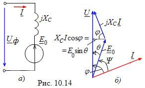

|
В установившемся режиме момент сопротивления Мc
на валу машины будет уравновешен вращающим электромагнитным моментом,
развиваемым двигателем, т. е. Мэм
= Мc.
Для вывода выражения электромагнитного момента СД воспользуемся схемой замещения одной фазы обмотки якоря (рис. 10.14, а). Активное сопротивление обмотки якоря Rя мало, поэтому в схеме замещения оставляют только ее индуктивное сопротивление jXc. Так как синхронный двигатель является приемником электрической энергии, то его противo-ЭДС E0 направлена навстречу напряжению Uф. Запишем уравнение электрического состояния фазы обмотки СД:
 Этому уравнению соответствует векторная диаграмма, изображенная на рис. 10.14, б. Вектор ЭДС E0, который связывают с положением полюсов N' - S' ротора, отстаёт на угол Θ от вектора фазного напряжения Uф сети, с которым связано положение полюсов результирующего магнитного поля N - S статора машины. Электромагнитная мощность, потребляемая двигателем из сети,
Мэм
= Рэм
/ ω0
= 3UфIcosφ
/ ω0
= 3UфE0sinΘ
/ ω0Xc,
|
||||||||